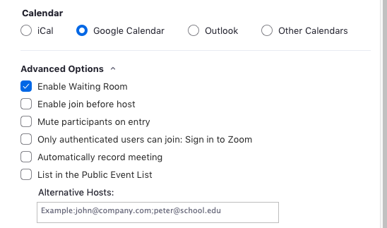
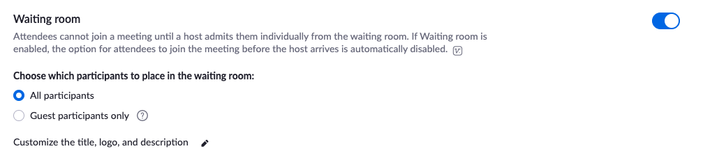

Cyber
HUB
Zoom - Enable Waiting Room
Step 1 - Sign in to your account in the Zoom Web Portal and access the Settings tab.
Step 2 - Click on the In Meeting (Advanced) option.
Step 3 - Search or scroll to find the Waiting Room option.
Step 4 - Toggle the button next to the Waiting Room to enable this feature.

Step 5 - After enabling the Waiting Room feature, you can choose to send all participants to the Waiting Room when they join or to send only guest participants (external accounts) to the Waiting Room. You can also allow other internal participants to admit guests from the Waiting Room if the host is not yet in the meeting.

Contacts